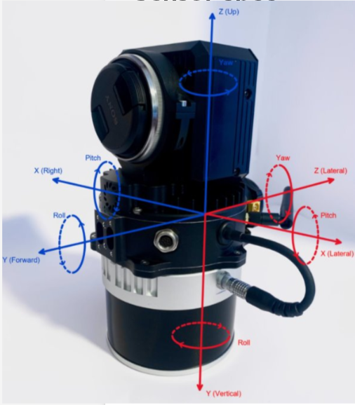
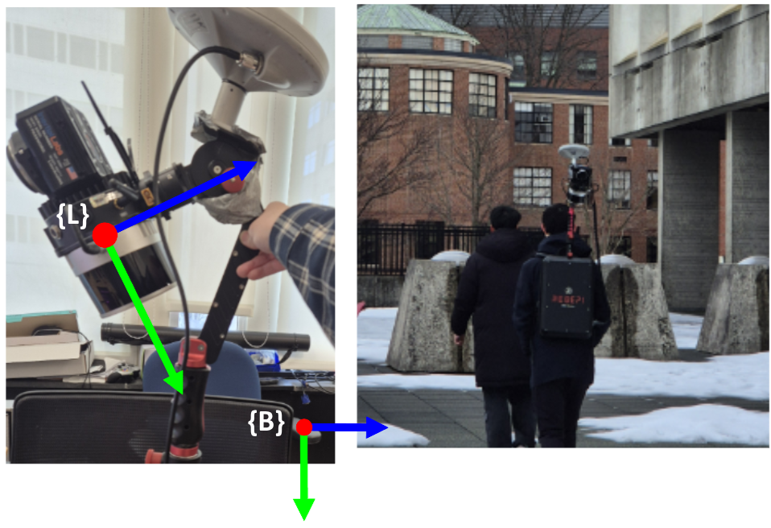

From Campus LiDAR to Simulation-Ready Digital Twins
A pipeline that turns one walk with a mobile mapping payload (LiDAR + camera + INS) into a
photo-textured, collision-ready 3D world for ground and aerial robots in Isaac Gym.
A LIMO navigating waypoints in the snowy Blue Wall twin: top view with the planned path, third-person view,
and the simulated D455 RGB camera with a depth inset.
Overview
Robot learning needs data from real places, but collecting every situation in the real world is slow, costly and risky.
We build digital twins of the UMass Amherst campus directly from raw sensor data.
The LiDAR point cloud provides the 3D geometry, and the photos provide the appearance for realistic rendering. The INS trajectory (accuracy under ~)
gives the 2D–3D correspondences between images and geometry. (an external VIO,SFM, or SLAM can be used instead.)
The finished twin loads directly into Isaac Gym, where ground robots (e.g. Clearpath Warthog) and aerial robots
(e.g. ModalAI Starling) navigate it while carrying simulated onboard sensors such as an Intel RealSense D455 RGB-D camera.
Hardware and datasets
All data were collected on the UMass Amherst campus with survey-grade equipment. The same LiDAR payload family and
mapping camera are used across sessions; what changes is the viewpoint: aerial (drone) or ground (on foot).
Hardware platform

Inertial Labs RESEPI XT-32 LiDAR payload
One compact unit (≈ 1.7 kg) that records everything needed for a georeferenced map. The same payload
can be flown on a drone or carried on foot.
LiDAR 32-channel spinning scanner (XT-32), 360° around, up to ~120 m
INS GNSS + tactical-grade IMU; after PPK, cm-level position for every LiDAR point and photo
Camera 24 MP RGB (Sony a5100, 16 mm), triggered every few seconds
DJI Mavic 2 ProMain survey drone (24 of 25 regions). 20 MP Hasselblad camera, ≈ 122 m AGL.
DJI Mavic 3 Enterprise (RTK)One region set (08/09/10/15/16), with RTK + PPK logs for direct georeferencing.
Trimble R10 GNSSGround station: RTK survey of the ground control points.
Dataset 2Ground · handheld

The RESEPI XT-32 is carried by hand while walking, so the LiDAR and camera see the scene from
close to a robot's height. No drone or ground control is needed: with the same payload you can
collect your own site and build a twin from it (see Quick guide).
Dataset 1
EE2023 · campus-wide aerial survey
Aerial view
Orthomosaic / aerial point cloud of the campus
Drone photogrammetry of the whole campus, split into ≤ 600 m square subregions (one battery each).
When
April 8–20, 2023 (core campus flown over a holiday weekend)
Platform
DJI Mavic 2 Pro (24 region folders), DJI Mavic 3 Enterprise RTK (1 folder: Regions 08/09/10/15/16)
Coverage
≈ 6.5 km² · 25 regions · 12,514 photos (135 GB)
Flight
≈ 122 m AGL · 75% side overlap · nadir, plus oblique (−65° gimbal) over the core campus
Control
GCPs surveyed with a Trimble R10 (RTK)
Processed
Agisoft Metashape: aligned camera poses, depth maps, dense cloud, DEM
Use here
Large-area twins seen from above; depth maps are back-projected into a point cloud (build_twin_aerial.py)
RESEPI XT-32 carried on foot; LiDAR and camera point 45° forward-down, close to a robot's viewpoint.
When
2026-03-07 · overcast, snow on the ground
Platform
RESEPI XT-32, handheld (walking)
Coverage
33 min · 2.1 km walked · 110 × 147 m around the Blue Wall · twin area 234 × 260 m
LiDAR
443 M points, georeferenced LAS (UTM 18N) with per-point gps_time, laser id, intensity, RGB
Camera
796 photos, 6000 × 4000, software-triggered every ~2.5 s
INS
PPK trajectory at 125 Hz (base station: HAMP CORS)
Use here
Main twin: photo-textured from the ground, close to what a robot camera sees (build_twin.py)
Pipeline overview
Preprocessed sensor data goes through three construction stages and comes out as a digital twin that Isaac Gym loads directly. Each stage writes its own files and is cached, so a rerun only does what changed.
From a metric point cloud with posed photos, we build geometry, bake photo textures and derive a
watertight collision shell. The resulting twin loads directly into Isaac Gym for ground and aerial robot experiments
with simulated RGB-D sensors. Monospace labels are the files each stage writes.
0
Sensor data
Preprocessed sensor data: metric point cloud + posed photos
Every input is first brought into one UTM frame as a point cloud plus photos with known poses. How depends on the source:
Ground (Dataset 2) Each LiDAR point is matched to the sensor pose that fired it (gps_time + INS).
A spinning laser sweeps a cone, so (point direction · spin axis) is constant per laser; this fixes the LAS ↔
trajectory offset (ring residual 3.3° → 0.008°). Photos are then registered to the LiDAR map by block matching,
with a small per-photo pose correction (reprojection 134 → 17 px).
Aerial (Dataset 1) Metashape camera poses and depth maps are back-projected into a point cloud and shifted into the LiDAR frame.
LAS only A coloured point cloud cropped to a site; no photos.
1
Digital twin construction
Geometry: 2.5D ground + 3D structure
Ground is a 0.25 m height grid with a label per cell (ground / obstacle / roof / unobserved). It is what robots
drive on and what the planner reads as the drivable map. Structures such as walls, trees and cars are kept in 3D:
points above the ground get normals oriented toward the sensor that saw them, and screened Poisson builds a surface
per 20 m tile. Faces far from any point are removed.
ground.glbmap.pngs_*.glb
2
Digital twin construction
Appearance: texture baking
For every texel (1 cm ground, 3 cm structure) the colour comes from the best available source: photos that see it
(occlusion-tested against LiDAR depth) → point RGB → low-frequency RGB × intensity shading → a per-material colour
learned from this site's photos. LiDAR intensity barely predicts brightness (correlation −0.07), so it only separates
materials and adds fine shading. Each texel records which source it came from.
g_*.png*_source.png
3
Digital twin construction
Collision: watertight voxel shell
The visual mesh has holes where points are sparse, and a robot could drive through them. Collision is built from the
points instead: they fill a 12.5 cm voxel grid, morphological closing fills gaps up to 0.75 m, and the outer surface
becomes a closed mesh. Points within 0.25 m of the collision surface rise from 28.9% (visual mesh) to 95.4%.
structure_collision_voxel.npz
4
Robot experiments
Simulation-ready twin → Isaac Gym
Visual tiles, collision mesh, drivable map and sky are packed as one twin that Isaac Gym loads directly. Ground robots
(LIMO, Warthog) plan with A* on the drivable map and follow it with pure pursuit; aerial robots (quadrotor, Starling) fly the
same waypoints above the structures. Both carry a simulated RealSense D455, so every run records RGB-D frames,
trajectories and navigation results from the real campus.
The left column rebuilds our twin from the released data. The right column does the same thing with data
you collected yourself. Each row is the same step, so you can compare them side by side.
Reproduce our twin Blue Wall session
Your own data any coloured LAS, or a RESEPI-style session
0 Setup
Two conda environments: one for processing, one for Isaac Gym.
Option B · full session (LAS + photos + INS). Write configs/mysite.json with the same keys as on the left
(session_dir, las, bbox_utm, origin).
2 Build twin
Registration, calibration, mesh and texture. Cached per stage.
python scripts/build_twin.py
# quick test on a 30 m area
python scripts/build_twin.py --region 85 170 115 200 --name crop
# Option A: LAS only (a few minutes for ~10 ha)
python scripts/build_twin_site.py --las data/sites/mysite.las
# → creates configs/mysite.json
# Option B: full session
python scripts/build_twin.py --config configs/mysite.json
Tune with --tex-res, --voxel, --min-h; rebake with --redo bake.
Pick waypoints on assets/twin/blue_wall/map.png (green = drivable, 10 m grid). Optionally inspect the
texture in Blender from the robot's camera height.
Real photos next to the twin rendered from the same pose, and robots driving through it.
Real vs. twin
Real photo
Sony a5100 photo
Twin render, same pose
Twin render from the calibrated pose
Robots in the twin
UGV (LIMO) navigation
LIMO, A* + pure pursuit
UAV flight
Quadrotor waypoint flight
UGV + UAV team
Both robots on the same path
Other campus sites
Library
Library (airborne LAS, 9.9 ha)
Pond
Campus pond
Blue Wall (aerial)
Blue Wall from drone photogrammetry
Citation
@inproceedings{umasslidar2027,
title = {From Campus LiDAR to Simulation-Ready Digital Twins},
author = {Author One and Author Two and Author Three},
booktitle = {Robotics: Science and Systems (RSS)},
year = {2027}
}